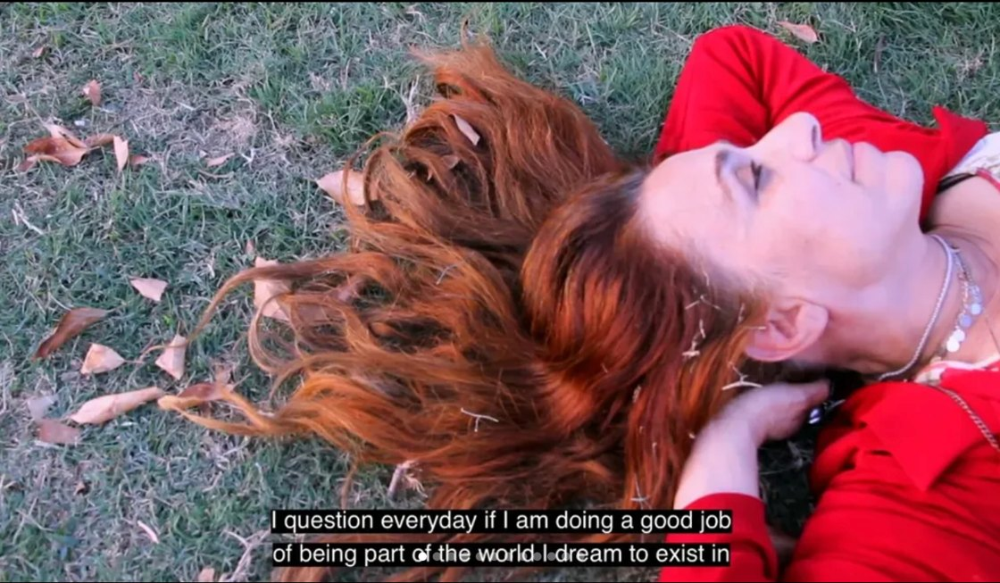
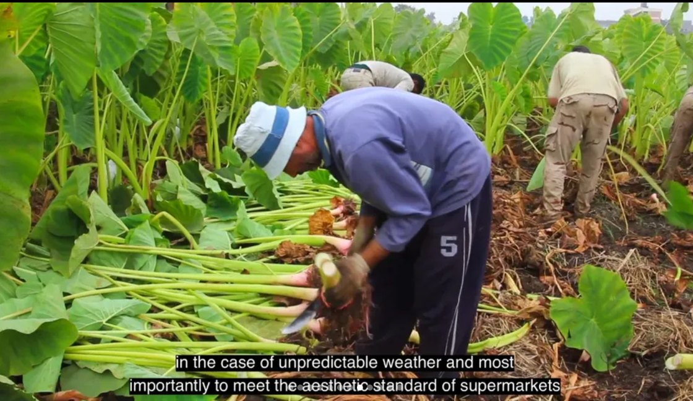
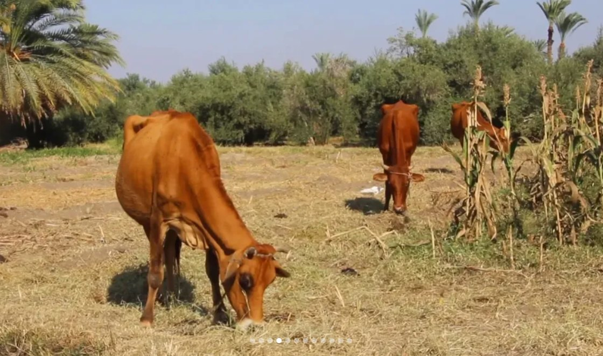

Film
A Double-Edged Sword
سيف ذو حدين

Synopsis
A short documentary about food waste in the food chain and its link to climate change and hunger.
Production credits
- Director, producer, cinematographer & editor
- Amira Abdel-Fadil
- Co-writers
- Amira Abdel-Fadil & Magda Baraka
- Sound design & mixing
- Amira Abdel-Fadil & Khaled Saleh
- Cast
- Magda Baraka
Film stills




